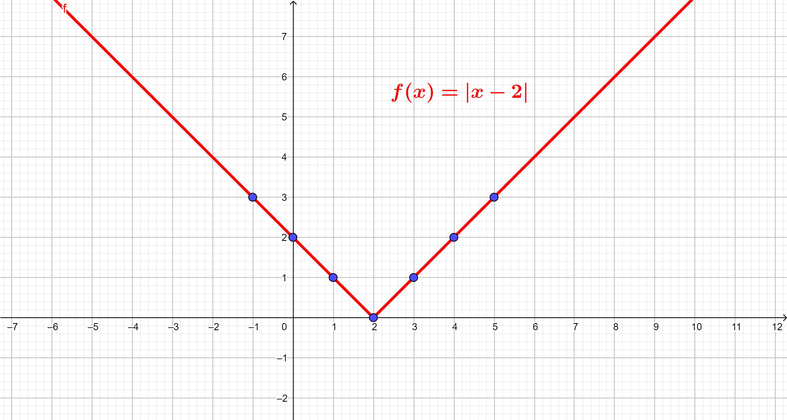

1º Trimestre
2º Trimestre
3º Trimestre

Funções Modulares:
Uma função modular, também conhecida como função valor absoluto, é um tipo de função matemática que envolve a expressão |x|, onde |x| representa o valor absoluto de x.
A função modular retorna a distância de x até zero em uma reta numérica, sem considerar a direção. Pode ser representada pela seguinte forma:
f(x)=|x|
ou mais geralmente:
f(x)=|ax+b|
Nessas expressões, "a" e "b" são constantes reais, e "x" é a variável de entrada.
Características Importantes:
Formato Geral: A função modular tem a forma de "V" invertido no plano cartesiano, com o vértice no ponto onde a expressão dentro do valor absoluto é igual a zero (ax + b = 0).
Simetria: A função é simétrica em relação ao eixo vertical que passa pelo vértice. Isso significa que se f(x) está no gráfico, então f(−x) também está.
Translações Verticais e Horizontais: Os parâmetros "a" e "b" na função f(x)=|ax+b| podem causar translações verticais e horizontais no gráfico.
Gráfico de uma Função Modular:
O gráfico de uma função modular exibe uma forma característica em "V". A posição do vértice e a inclinação das partes crescente e decrescente são determinadas pelos parâmetros "a" e "b".

Imagem retirada de: https://escolaeducacao.com.br/funcao-modular/
Assíntotas e Limites:
Ao contrário das funções exponenciais, as funções modulares não possuem assíntotas verticais ou horizontais. No entanto, as transformações lineares podem influenciar a posição do vértice e a inclinação das partes crescente e decrescente da função.
Vamos considerar funções modulares que envolvem funções quadráticas. Uma função modular com uma função quadrática geralmente tem a forma f(x)=|ax2 + b | + c, onde a, b, e c são constantes reais e x é a variável de entrada.